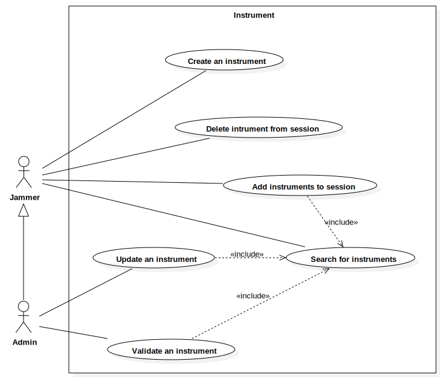

Instrument UC
UMLPackage
JAMS — Just Another Music Studio
::
Use Case Model
::
Instrument UC
Description
none
Diagrams

Instrument UC View
Properties
Name
Value
name
Instrument UC
stereotype
null
visibility
public
importedElements
Owned Elements
Instrument UC View
Create an instrument
Delete intrument from session
Add instruments to session
Search for instruments
Update an instrument
Validate an instrument
Remove an instrument